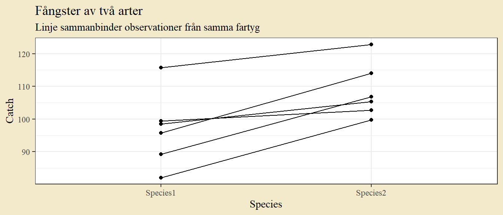
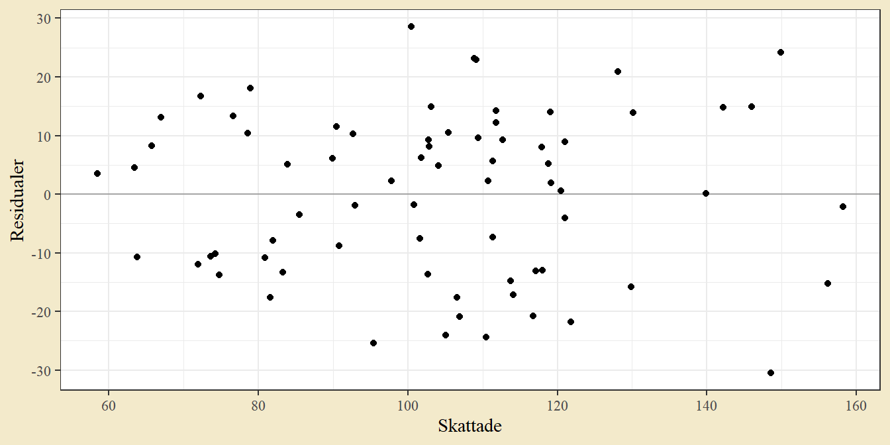

7 Datorövning 7. Anova-modellen och -tabellen
Datorövning 7 handlar om anova-modellen och Anova-tabellen. Efter övningen ska vi kunna
beräkna en anova-modell i R,
ta fram och tolka en anova-tabell,
göra lämpliga tester av modellantaganden,
göra parvisa jämförelser mellan behandlingar
7.1 Allmänt
Variansanalys (eller anova-modellen) är en statistisk modell där medelvärdet varierar beroende på en behandling och ett normalfördelat slumpfel. Från en anova-modell kan man beräkna ett F-test, som testar om det finns någon övergripande gruppskillnad, och post-hoc-test, som jämför specifika grupper med varandra.
Den specifika modellen beror på försöksupplägget. Här ges exempel på variansanalys med en faktor, en faktor med block, och två faktorer.
7.2 Variansanalys. En faktor
Vid variansanalys med en faktor har man observationer av en kontinuerlig utfallsvariabel från två eller flera behandlingsgrupper. Som exempel används en datamängd på ett odlingsförsök med tre behandlingar (varav en kontroll). Exemplet finns tillgängligt i R som PlantGrowth.
PlantGrowth## weight group
## 1 4.17 ctrl
## 2 5.58 ctrl
## 3 5.18 ctrl
## 4 6.11 ctrl
## 5 4.50 ctrl
## 6 4.61 ctrl
## 7 5.17 ctrl
## 8 4.53 ctrl
## 9 5.33 ctrl
## 10 5.14 ctrl
## 11 4.81 trt1
## 12 4.17 trt1
## 13 4.41 trt1
## 14 3.59 trt1
## 15 5.87 trt1
## 16 3.83 trt1
## 17 6.03 trt1
## 18 4.89 trt1
## 19 4.32 trt1
## 20 4.69 trt1
## 21 6.31 trt2
## 22 5.12 trt2
## 23 5.54 trt2
## 24 5.50 trt2
## 25 5.37 trt2
## 26 5.29 trt2
## 27 4.92 trt2
## 28 6.15 trt2
## 29 5.80 trt2
## 30 5.26 trt2Datan har 30 observationer av vikt weight och varje observation tillhör någon specifik behandling group. Datan kan illustreras med ett spridningsdiagram.
ggplot(PlantGrowth, aes(group, weight)) +
geom_point()
Behandling 1 verkar vara något lägre än kontrollen medan behandling 2 verkar vara något högre.
En anova-modell kan i R skattas med funktionen lm() (för linjär modell). Från modellobjektet kan man sedan plocka fram en anova-tabell (som bland annat anger utfallet av F-testet) och genomföra parvisa jämförelser genom emmeans.
mod <- lm(weight ~ group, data = PlantGrowth)Modellen anges som en formel weight ~ group, vilket kan utläsas vikt beroende på behandlingsgrupp. Därefter anges data med argumentet data.
För anova-tabellen finns flera alternativ. Här används funktionen Anova() från paketet car.
library(car)
Anova(mod)## Anova Table (Type II tests)
##
## Response: weight
## Sum Sq Df F value Pr(>F)
## group 3.7663 2 4.8461 0.01591 *
## Residuals 10.4921 27
## ---
## Signif. codes: 0 '***' 0.001 '**' 0.01 '*' 0.05 '.' 0.1 ' ' 1Anova-tabellen ger kvadratsummor (Sum Sq), frihetsgrader (Df) och utfallet av ett F-test. Testets hypoteser ges av
H0: alla behandlingsgrupper har samma medelvärde H1: alla behandlingsgrupper har inte samma medelvärde
Det låga p-värdet tyder på att nollhypotesen bör förkastas, vilket alltså pekar på att det finns någon eller några skillnader i medelvärde.
Uppgift 7.1 (Anova för hand) Anovatabell från Anova() ger kvadratsummor och frihetsgrader. Använd den informationen för att, för hand, beräkna medelkvadratsummor och F-värdet.
Uppgift 7.2 (Tabellvärde för F-fördelningen) Anova-tabellen ger ett p-värde från vilket vi kan dra en direkt slutsats. Om man istället löser uppgiften för hand ställer man det beräknade F-värdet mot ett kritiskt värde från en tabell över F-fördelningen. Se efter om man kan hitta ett lämpligt tabellvärde för det aktuella testet (med 2 och 27 frihetsgrader). Det är möjligt att det inte finns en rad för 27 i en vanlig F-fördelningstabell, använd isåfall värdet på närmast övre rad (t.ex. 26 eller 25). I R kan kvantiler för F-fördelningen tas fram med qf(), t.ex.
qf(0.95, 2, 27)## [1] 3.354131En naturlig följdfråga är vilka behandlingsgrupper som skiljer sig åt. För att besvara det krävs parvisa jämförelser där behandlingarna jämförs två och två. Parvisa jämförelse kan göras med paketet emmeans och funktionen med samma namn. Funktionen tar modellobjektet som första argument och en formel för jämförelsetyp som andra argument (här pairwise ~ group, en parvis jämförelse mellan nivåer i group).
# install.packages("emmeans")
library(emmeans)
emmeans(mod, pairwise ~ group)## $emmeans
## group emmean SE df lower.CL upper.CL
## ctrl 5.03 0.197 27 4.63 5.44
## trt1 4.66 0.197 27 4.26 5.07
## trt2 5.53 0.197 27 5.12 5.93
##
## Confidence level used: 0.95
##
## $contrasts
## contrast estimate SE df t.ratio p.value
## ctrl - trt1 0.371 0.279 27 1.331 0.3909
## ctrl - trt2 -0.494 0.279 27 -1.772 0.1980
## trt1 - trt2 -0.865 0.279 27 -3.103 0.0120
##
## P value adjustment: tukey method for comparing a family of 3 estimatesI den nedre tabellen med jämförelser ges alla parvisa jämförelser. Nollhypotesen är att de två grupper som jämförs har samma medelvärde - ett lågt p-värde tyder alltså på att de två grupperna är signifikant skilda. Notera också att p-värden justeras med tukey-metoden, även känt som Tukeys HSD.
Om man istället vill använda Fishers LSD kan man styra justeringen med argumentet adjust.
emmeans(mod, pairwise ~ group, adjust = "none")## $emmeans
## group emmean SE df lower.CL upper.CL
## ctrl 5.03 0.197 27 4.63 5.44
## trt1 4.66 0.197 27 4.26 5.07
## trt2 5.53 0.197 27 5.12 5.93
##
## Confidence level used: 0.95
##
## $contrasts
## contrast estimate SE df t.ratio p.value
## ctrl - trt1 0.371 0.279 27 1.331 0.1944
## ctrl - trt2 -0.494 0.279 27 -1.772 0.0877
## trt1 - trt2 -0.865 0.279 27 -3.103 0.0045Parvisa jämförelser presenteras ofta med signifikansbokstäver (en. compact letter display, cld). Dessa kan plockas fram med multcomp-paketet och funktionen cld().
em <- emmeans(mod, pairwise ~ group)
library(multcomp)
cld(em, Letters = letters)## group emmean SE df lower.CL upper.CL .group
## trt1 4.66 0.197 27 4.26 5.07 a
## ctrl 5.03 0.197 27 4.63 5.44 ab
## trt2 5.53 0.197 27 5.12 5.93 b
##
## Confidence level used: 0.95
## P value adjustment: tukey method for comparing a family of 3 estimates
## significance level used: alpha = 0.05
## NOTE: Compact letter displays can be misleading
## because they show NON-findings rather than findings.
## Consider using 'pairs()', 'pwpp()', or 'pwpm()' instead.Tolkning av grupperingen till höger är att grupper som delar en bokstav inte är signifikant skilda. I det här fallet är den lägsta nivån skild från de två högsta. I övrigt finns inga signifikanta skillnader. Jämför gärna med p-värdena från tabellen med parvisa jämförelser. Man bör se att parvisa jämförelser med ett p-värde under fem procent motsvaras av att de behandlingarna inte delar någon bokstav i bokstavstabellen.
Uppgift 7.3 (Anova med två behandlingar) Följande kod skapar en datamängd med två behandlingar.
dat_two <- PlantGrowth %>% filter(group %in% c("trt1", "trt2"))Använd den datan för att göra ett t-test för två oberoende stickprov med lika varians, ett t-test för två oberoende stickprov utan antagande om lika varians, och ett F-test (ofullständig exempelkod nedan). Vad kan sägas om p-värdena från de tre testen?
t.test(___ ~ group, data = dat_two, var.equal = T)
t.test(weight ~ ___, data = dat_two, var.equal = F)
mod <- lm(weight ~ group, data = ___)
Anova(mod)Uppgift 7.4 (Mass-signifikans) Anledning till att vi justerar p-värden är att man vid varje test har en sannolikhet att förkasta. Om man gör ett stort antal tester är man nästan garanterad att få något (falskt) signifikant resultat. Justering höjer p-värdena för att minska den risken. Följande kod simulerar data med 5 grupper och producerar de parvisa jämförelserna.
n_groups <- 5
dat_sim <- expand_grid(obs = 1:10, group = letters[1:n_groups]) %>% mutate(y = rnorm(n()))
mod <- lm(y ~ group, dat_sim)
emmeans(mod, pairwise ~ group, adjust = "none")## $emmeans
## group emmean SE df lower.CL upper.CL
## a 0.0491 0.32 45 -0.595 0.693
## b 0.2555 0.32 45 -0.389 0.900
## c 0.1422 0.32 45 -0.502 0.787
## d -0.7732 0.32 45 -1.418 -0.129
## e -0.2624 0.32 45 -0.907 0.382
##
## Confidence level used: 0.95
##
## $contrasts
## contrast estimate SE df t.ratio p.value
## a - b -0.2064 0.452 45 -0.456 0.6504
## a - c -0.0931 0.452 45 -0.206 0.8378
## a - d 0.8223 0.452 45 1.818 0.0758
## a - e 0.3115 0.452 45 0.689 0.4946
## b - c 0.1133 0.452 45 0.250 0.8034
## b - d 1.0288 0.452 45 2.274 0.0278
## b - e 0.5179 0.452 45 1.145 0.2584
## c - d 0.9155 0.452 45 2.023 0.0490
## c - e 0.4046 0.452 45 0.894 0.3759
## d - e -0.5108 0.452 45 -1.129 0.2649Kör koden tio gånger. Hur många gånger av de tio ger de parvisa jämförelserna någon signifikant skillnad (det vill säga något p-värde under 0.05)?
En passande xkcd-serie: https://xkcd.com/882/
Uppgift 7.5 (Äppelinfektionsimport) En studie har givit ett mått på infektion hos äppelträd. Fyra sorter jämförs med tre replikat per sort. Data finns i fliken Äppelangrepp i excelfilen Uppgiftsdata.xslx på canvassidan. Fyll i kodstycket nedan för att importera datan.
Uppgift 7.6 (Äppelinfektionsgraf) Fyll i kodstycket nedan för att skapa en graf av äppeldatan.
ggplot(___, aes(x = ___, y = ___)) +
geom_point()Uppgift 7.7 (Äppelinfektionsmodell) Fyll i kodstycket nedan för att skatta en anovamodell och ta fram anovatabellen. Vad är F-testets noll- och alternativhypotes? Vilken slutsats kan man dra från testet?
mod <- lm(___ ~ ___, data = dat_apple)
Anova(mod)7.3 Variansanalys. En faktor med block
I en blockdesign delas försöksobjekten (de enheter man ger en behandling och sedan mäter, t.ex. en försöksruta eller en planta) in i grupper av lika objekt (ett block). Sedan ger man enheterna inom blocket varsin behandling. Blockförsök är ofta balanserade, så att varje behandling förekommer en gång i varje block.
Som exempel på ett blockförsök kan vi titta på datan oats från paketet MASS. Datan kommer från ett agrikulturellt försök och blockdesignen sker genom att man delar in ett fält i flera delar (blocken) och sätter varje behandling i varje block. Datan har två faktorer (kväve N och sort V), men låt oss i den här första delen titta på en specifik sort.
library(MASS)
oats_marvel <- oats %>% filter(V == "Marvellous")
oats_marvel## B V N Y
## 1 I Marvellous 0.0cwt 105
## 2 I Marvellous 0.2cwt 140
## 3 I Marvellous 0.4cwt 118
## 4 I Marvellous 0.6cwt 156
## 5 II Marvellous 0.0cwt 96
## 6 II Marvellous 0.2cwt 124
## 7 II Marvellous 0.4cwt 121
## 8 II Marvellous 0.6cwt 144
## 9 III Marvellous 0.0cwt 89
## 10 III Marvellous 0.2cwt 129
## 11 III Marvellous 0.4cwt 132
## 12 III Marvellous 0.6cwt 124
## 13 IV Marvellous 0.0cwt 70
## 14 IV Marvellous 0.2cwt 89
## 15 IV Marvellous 0.4cwt 104
## 16 IV Marvellous 0.6cwt 117
## 17 V Marvellous 0.0cwt 63
## 18 V Marvellous 0.2cwt 70
## 19 V Marvellous 0.4cwt 109
## 20 V Marvellous 0.6cwt 99
## 21 VI Marvellous 0.0cwt 97
## 22 VI Marvellous 0.2cwt 99
## 23 VI Marvellous 0.4cwt 119
## 24 VI Marvellous 0.6cwt 121En vanlig illustration av ett blockförsök är ett punktdiagram kombinerat med ett linjediagram.
ggplot(oats_marvel, aes(N, Y, color = B, group = B)) +
geom_point(size = 4) +
geom_line()
Färg och linje sammanbinder observationer från samma block. Det finns tecken på en blockeffekt: block I är nästan alltid högst och block V är nästan alltid lägst. Det finns också en tydlig behandlingseffekt i att högre kväve ger högre skörd.
Blockeffekten kan enkelt föras in i modellen genom att lägga till variabeln B i lm-funktionen. Anova-tabellen och parvisa jämförelser kan göras på samma sätt som tidigare. Resultaten påverkas av att modellen har en blockfaktor; man behöver vanligen inte ange det explicit.
mod_bl <- lm(Y ~ N + B, data = oats_marvel)
Anova(mod_bl)## Anova Table (Type II tests)
##
## Response: Y
## Sum Sq Df F value Pr(>F)
## N 5287.5 3 14.6241 0.0001004 ***
## B 5708.7 5 9.4735 0.0003106 ***
## Residuals 1807.8 15
## ---
## Signif. codes: 0 '***' 0.001 '**' 0.01 '*' 0.05 '.' 0.1 ' ' 1P-värdet från F-testet på variabeln N är nu klart mindre än tidigare. Detta beror på att en stor del av variationen kan förklaras med blockeffekten, vilket är tydligt i att blockeffekten också har ett litet p-värde i F-testet.
Det kan vara intressant att jämföra med modellen utan block.
mod_wo_block <- lm(Y ~ N, data = oats_marvel)
Anova(mod_wo_block)## Anova Table (Type II tests)
##
## Response: Y
## Sum Sq Df F value Pr(>F)
## N 5287.5 3 4.6896 0.01227 *
## Residuals 7516.5 20
## ---
## Signif. codes: 0 '***' 0.001 '**' 0.01 '*' 0.05 '.' 0.1 ' ' 1Det som är residualens kvadratsumma i modellen utan block är i blockmodellen uppdelat i en blockeffekt och en residualterm. Eftersom F-testet bygger på en jämförelse mellan behandlingseffekten och residualtermen leder blockdesignen till starkare signifikans i blockmodellen. Å andra sidan kostar blockfaktorn frihetsgrader vilket ger oss ett svagare test. Effekten av att ta med ett block beror alltså på om det finns en verklig skillnad mellan blocken eller ej.
Vi kan gå vidare med att titta på parvisa jämförelser mellan kvävenivåer. Funktionen emmeans() och cld() fungerar som tidigare.
cld(emmeans(mod_bl, ~ N), Letters = letters)## N emmean SE df lower.CL upper.CL .group
## 0.0cwt 86.7 4.48 15 77.1 96.2 a
## 0.2cwt 108.5 4.48 15 98.9 118.1 b
## 0.4cwt 117.2 4.48 15 107.6 126.7 bc
## 0.6cwt 126.8 4.48 15 117.3 136.4 c
##
## Results are averaged over the levels of: B
## Confidence level used: 0.95
## P value adjustment: tukey method for comparing a family of 4 estimates
## significance level used: alpha = 0.05
## NOTE: Compact letter displays can be misleading
## because they show NON-findings rather than findings.
## Consider using 'pairs()', 'pwpp()', or 'pwpm()' instead.Signifikansbokstäver anger att den lägsta nivån är skild från övriga och att den näst lägsta är skild från den högsta. Även här kan det vara intressant att jämföra med modellen utan block.
cld(emmeans(mod_wo_block, ~ N), Letters = letters)## N emmean SE df lower.CL upper.CL .group
## 0.0cwt 86.7 7.91 20 70.2 103 a
## 0.2cwt 108.5 7.91 20 92.0 125 ab
## 0.4cwt 117.2 7.91 20 100.7 134 ab
## 0.6cwt 126.8 7.91 20 110.3 143 b
##
## Confidence level used: 0.95
## P value adjustment: tukey method for comparing a family of 4 estimates
## significance level used: alpha = 0.05
## NOTE: Compact letter displays can be misleading
## because they show NON-findings rather than findings.
## Consider using 'pairs()', 'pwpp()', or 'pwpm()' instead.Modellen utan block ger samma medelvärden emmean men större medelfel SE och färre signifikanta skillnader.
Uppgift 7.8 (Block med två behandlingar. Graf) Det minsta möjliga blocket är det med två behandlingar. Vi filtrerar havredatan för att den situationen.
dat_small_block <- oats %>% filter(V == "Marvellous", N %in% c("0.6cwt", "0.0cwt"))
dat_small_block## B V N Y
## 1 I Marvellous 0.0cwt 105
## 2 I Marvellous 0.6cwt 156
## 3 II Marvellous 0.0cwt 96
## 4 II Marvellous 0.6cwt 144
## 5 III Marvellous 0.0cwt 89
## 6 III Marvellous 0.6cwt 124
## 7 IV Marvellous 0.0cwt 70
## 8 IV Marvellous 0.6cwt 117
## 9 V Marvellous 0.0cwt 63
## 10 V Marvellous 0.6cwt 99
## 11 VI Marvellous 0.0cwt 97
## 12 VI Marvellous 0.6cwt 121Fyll i stycket nedan för att skapa en graf med N på x-axeln, Y på y-axeln och en gruppering som länkar observationer från samma block.
ggplot(dat_small_block, aes(x = ___, y = ___, group = ___)) +
geom_point() +
geom_line()Uppgift 7.9 (Block med två behandlingar. Test) Eftersom det är ett försök med en förklarande faktor och block kan man modellera det med den tidigare blockmodellen. Men eftersom man bara har två observationer per block kan man också se det som matchade stickprov, vilket kan lösas med ett t-test. Fyll i stycket nedan för att göra de två testen - utfallsvariabeln är skörd Y och den förklarande faktorn är kvävenivån N. Jämför resultaten.
mod <- lm(___ ~ ___ + B, data = dat_small_block)
Anova(mod)
t.test(___ ~ ___, data = dat_small_block, paired = ___)Uppgift 7.10 (Majshybridimport) I fliken Majshybrider i excelfilen Uppgiftsdata.xlsx finns data på fyra majssorter, vardera sorterad på fem platser (som agerar som block). Importera datan med funktionen read_excel() genom att fylla i kodstycket nedan.
dat_corn <- read_excel("", sheet = ___)Uppgift 7.11 (Majshybridgraf) Skapa en lämplig graf av datan på majshybrider. Grafen ska illustrera både jämförelsen mellan hybrider och jämförelsen mellan platser. Se exemplet ovan som guide.
Uppgift 7.12 (Majshybridmodell) Fyll i koden nedan för att skatta en anova-modell med block för datan på majshybrider. Ta fram anovatabellen med Anova(). Vilka slutsatser kan man dra från anovatabellen?
mod <- lm(___ ~ ___ + Plats, data = dat_corn)
Anova(mod)Uppgift 7.13 (Majshybridjämförelser) Gör lämplig ändring i koden nedan för att jämföra hybrider, istället för platser.
emmeans(mod, pairwise ~ Plats)7.4 Variansanalys. Två faktorer med block
Exempeldata på havre tar med två förklarande faktorer och ett block. Datan kan illustreras med ett punktdiagram där facet_wrap delar grafen efter sort.
ggplot(oats, aes(N, Y, color = B)) +
geom_point(size = 4) +
facet_wrap(~ V)Grafen visar samma kvävesamband som tidigare. Det finns inga tydliga skillnader mellan sorter, möjligen har sorten Victory givit något lägre skörd än övriga. Det finns fortfarande en tydlig blockeffekt, till exempel har block I höga värden och block V låga värden.
Modellen skattas genom att lägga till variabeln för sort (V för variety) i lm-formeln. En modell med två faktorer kan antingen vara med eller utan en interaktion. Interaktionstermen fångar påverkan mellan faktorerna. Ett exempel hade varit om någon sort svarat starkare på ökad kväve än någon annan. Standardmodellen är att ta med interaktionen, vilket vi anger genom att sätta N * V istället för N + V. Blocket tas fortfarande med som en adderad faktor
mod_two_fact <- lm(Y ~ N * V + B, data = oats)Anovatabellen kan plockas fram på samma sätt som tidigare.
Anova(mod_two_fact)## Anova Table (Type II tests)
##
## Response: Y
## Sum Sq Df F value Pr(>F)
## N 20020.5 3 26.2510 1.135e-10 ***
## V 1786.4 2 3.5134 0.03665 *
## B 15875.3 5 12.4894 4.093e-08 ***
## N:V 321.8 6 0.2109 0.97187
## Residuals 13982.1 55
## ---
## Signif. codes: 0 '***' 0.001 '**' 0.01 '*' 0.05 '.' 0.1 ' ' 1Raden N:V gäller interaktionseffekten mellan kväve och sort. I det här fallet är det ingen signifikant interaktion - vilket tyder på att sorterna svarar på kvävebehandling på liknande sätt. Samtliga huvudeffekter (raderna för N, V och B) är signifikanta. Kvadratsummorna och p-värdena tyder på att kväve förklarar mer av variationen än sort, vilket också är i linje med grafen ovan.
Vid flerfaktoriella försök kan man presentera parvisa jämförelser på flera olika sätt. Man kan ange huvudeffekter för en faktor utan att ange den andra faktorn, man kan ange medelvärden för samtliga kombinationer av två faktorer, och man kan ange medelvärden uppdelat efter nivåer i en annan faktor.
emmeans(mod_two_fact, ~ N)## N emmean SE df lower.CL upper.CL
## 0.0cwt 79.4 3.76 55 71.9 86.9
## 0.2cwt 98.9 3.76 55 91.4 106.4
## 0.4cwt 114.2 3.76 55 106.7 121.8
## 0.6cwt 123.4 3.76 55 115.9 130.9
##
## Results are averaged over the levels of: V, B
## Confidence level used: 0.95emmeans(mod_two_fact, ~ N + V)## N V emmean SE df lower.CL upper.CL
## 0.0cwt Golden.rain 80.0 6.51 55 67.0 93.0
## 0.2cwt Golden.rain 98.5 6.51 55 85.5 111.5
## 0.4cwt Golden.rain 114.7 6.51 55 101.6 127.7
## 0.6cwt Golden.rain 124.8 6.51 55 111.8 137.9
## 0.0cwt Marvellous 86.7 6.51 55 73.6 99.7
## 0.2cwt Marvellous 108.5 6.51 55 95.5 121.5
## 0.4cwt Marvellous 117.2 6.51 55 104.1 130.2
## 0.6cwt Marvellous 126.8 6.51 55 113.8 139.9
## 0.0cwt Victory 71.5 6.51 55 58.5 84.5
## 0.2cwt Victory 89.7 6.51 55 76.6 102.7
## 0.4cwt Victory 110.8 6.51 55 97.8 123.9
## 0.6cwt Victory 118.5 6.51 55 105.5 131.5
##
## Results are averaged over the levels of: B
## Confidence level used: 0.95emmeans(mod_two_fact, ~ N | V)## V = Golden.rain:
## N emmean SE df lower.CL upper.CL
## 0.0cwt 80.0 6.51 55 67.0 93.0
## 0.2cwt 98.5 6.51 55 85.5 111.5
## 0.4cwt 114.7 6.51 55 101.6 127.7
## 0.6cwt 124.8 6.51 55 111.8 137.9
##
## V = Marvellous:
## N emmean SE df lower.CL upper.CL
## 0.0cwt 86.7 6.51 55 73.6 99.7
## 0.2cwt 108.5 6.51 55 95.5 121.5
## 0.4cwt 117.2 6.51 55 104.1 130.2
## 0.6cwt 126.8 6.51 55 113.8 139.9
##
## V = Victory:
## N emmean SE df lower.CL upper.CL
## 0.0cwt 71.5 6.51 55 58.5 84.5
## 0.2cwt 89.7 6.51 55 76.6 102.7
## 0.4cwt 110.8 6.51 55 97.8 123.9
## 0.6cwt 118.5 6.51 55 105.5 131.5
##
## Results are averaged over the levels of: B
## Confidence level used: 0.95Även här kan man göra jämförelser mellan nivåer genom att sätta pairwise ~ N + V eller beräkna signifikansbokstäver med cld. Följande kod jämför kvävenivåer inom sort.
Uppgift 7.14 (Sort uppdelat efter kvävenivå) Gör lämplig ändring i koden ovan för att jämföra sorter inom kvävenivå. Finns det några signifikanta skillnader?
Uppgift 7.15 (Interaktion med ett block) I modellen ovan är block en additiv faktor - den ingår inte i någon interaktionseffekt. Vad händer med testerna om man skattar modellen där samtliga interaktioner tas med? Varför?
mod_two_fact <- lm(Y ~ N * V * B, data = oats)7.5 Modellantaganden och residualer
Samtliga anovamodeller har samma grundläggande antaganden: feltermerna (den kvarvarande slumpmässigheten) är normalfördelade, sinsemellan oberoende, och variansen är samma för samtliga behandlingsgrupper. Antagandena testas oftast genom att titta på modellens residualer - skillnaden mellan det faktiska värdet och det skattade värdet. För en skattad modell kan man ta upp residualerna med residuals() och de skattade värdena med fitted(). Vi kan lägga till residualer och skattningar till datan med ett mutate()-steg.
oats <- oats %>%
mutate(Residualer = residuals(mod_two_fact),
Skattade = fitted(mod_two_fact))Normalfördelning kan undersökas grafiskt med ett histogram eller en QQ-graf.
g_hist <- ggplot(oats, aes(Residualer)) + geom_histogram(bins = 20)
g_qq <- ggplot(oats, aes(sample = Residualer)) + geom_qq() + geom_qq_line()
library(patchwork)
g_hist + g_qqPunkterna avviker något från normalfördelningen i svansarna, men det är förstås alltid en bedömningsfråga.
Lika varians undersöks ofta med ett spridningsdiagram med de skattade värdena på x-axeln och residualerna på y-axeln.
ggplot(oats, aes(x = Skattade, y = Residualer)) +
geom_point() +
geom_hline(yintercept = 0, alpha = 0.3)
Om datan är i linje med antaganden ska diagrammet se ut som slumpmässigt placerade punkter med ungefär lika stor spridning kring noll-linjen för samtliga nivåer på x-axeln. För det här exemplet ser det okej ut.
Uppgift 7.16 (Bakterieimport) Fliken Bakterier i filen Uppgiftsdata.xlsx innehåller data om tillväxt hos gräs efter inokulering av bakterier. Ladda ner filen och importera datan genom att fylla i koden nedan.
dat_bact <- read_excel("___", sheet = "Bakterier")Uppgift 7.17 (Bakterieimport) Illustrera datan med en lämplig graf, till exempel ett spridningsdiagram med Inoculation på x-axeln, Dry weight på y-axeln, småfönster efter Cultivar och färg efter Block.
ggplot(dat_bact, aes(x = ___, y = `___`, color = Block)) +
geom_point(size = 6) +
facet_wrap(~ ___)Hur blev färgerna för blocket? Om de inte blev distinkta färger kan variabeln Block ha blivit inläst som numerisk. Transformera variabeln med as.character() och gör om grafen. Ändras färgerna?
dat_bact <- dat_bact %>%
mutate(Block = as.character(Block))Uppgift 7.18 (Bakteriemodell) Bakteriedatan har två faktorer och en blockfaktor. Skatta en anova-modell med interaktion och block genom att fylla i stycket nedan. Ta fram anovatabell och dra en slutsats från F-testen. Ligger slutsatsen i linje med grafen?
mod <- lm(`___` ~ ___ * ___ + ___, data = dat_bact)
Anova(mod)Uppgift 7.19 (Bakteriejämförelser) Använd emmeans() för parvisa jämförelser mellan inokuleringsmetoder. Vilka par är signifikant åtskilda?
emmeans(mod, pairwise ~ ___)Uppgift 7.20 (Bakterieresidualer) Vi använder den skattade modellen för att ta fram skattade värden och residualer.
dat_bact <- dat_bact %>%
mutate(Residualer = residuals(mod),
Skattade = fitted(mod))Använd exemplet på residualtester ovan för att undersöka antagandet om normalfördelade residualer.